4 RStudio’s Interface
Here, I’ll provide a set of annotated screenshots highlighting many of the features of RStudio’s IDE (Integrated Development Environment) which will be useful as you work through this textbook. You shouldn’t expect to remember all of this right now, but I’m providing it in the hopes that you’ll be able to come back to it when future instructions like “Click the render button at the top of the text editor window” don’t make sense or match what you’re seeing.
4.1 Objectives
- Locate different panes of RStudio
- Use cues such as buttons and icons to identify what type of file is open and what language is being interpreted
4.2 Overview
![A screenshot of an RStudio window highlighting buttons for creating new files (top left), opening an RStudio project (top right). The main portion of the window shows the four panes in a default RStudio interface. The editor pane (top left), contains text files that may contain R or python code. The terminal/console pane (bottom left), contains the R console, system terminal, and a tab for background jobs. The top right pane contains the environment, history, connections, and tutorial tabs by default, and may also contain tabs labeled build and git, depending on your project setup. The environment tab shows you what objects are currently in your programming environment - that is, what things are defined. The bottom right pane contains the files, plots, packages, help, viewer, and presentation tabs. By default, the files tab will show you your current working directory; if you are not working in a project, then it will show your home directory, which is the default working directory.](../images/tools/Rstudio-important-buttons.png) An RStudio window is by default divided into 4 panes, each of which may contain several tabs. You can reconfigure the locations of these tabs based on your preferences by selecting the toolbar button with 4 squares (just left of the Addins dropdown menu).
An RStudio window is by default divided into 4 panes, each of which may contain several tabs. You can reconfigure the locations of these tabs based on your preferences by selecting the toolbar button with 4 squares (just left of the Addins dropdown menu).
In the default configuration, - The top left is the editor pane, where you will write code and other content. - The bottom left is the console pane, which contains your R/python interactive consoles as well as a system terminal and location for checking the status of background jobs. - The top right contains the environment and history tabs (among others) - The top left contains the files and help tabs (among others)
You do not need to know what all of these tabs do right now. For the moment, it’s enough to get a sense of the basics - where to write code (top left), where to look for results (bottom left), where to get help (bottom right), and where to monitor what R/python are doing (top right).
4.3 The Editor/File Pane (Top Left)
The buttons and layout within this pane change based on the type of file you have open.
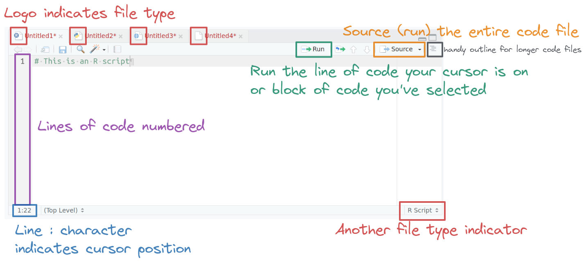
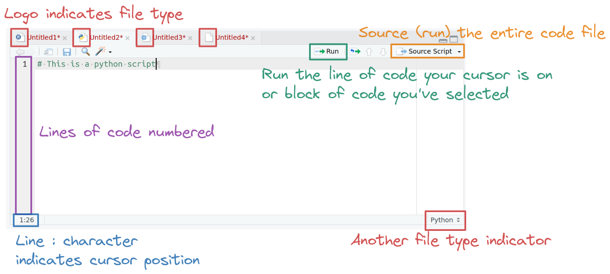
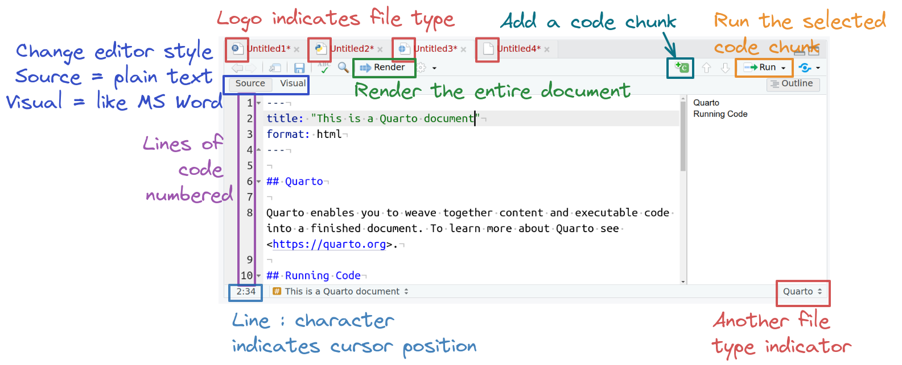
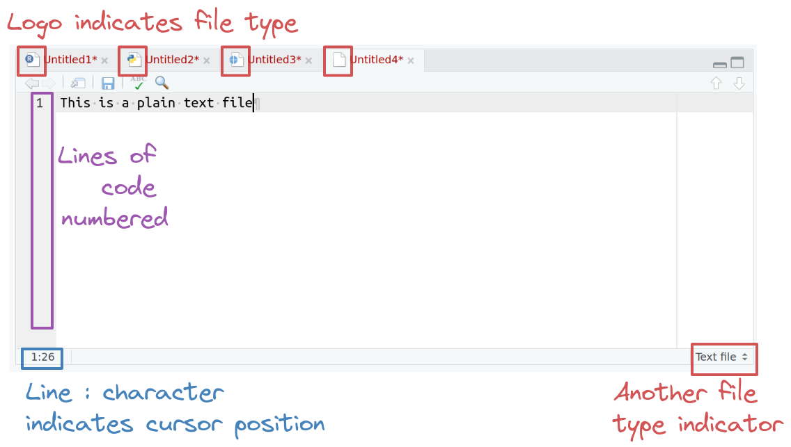
4.4 The Console Pane (Bottom Left)
Let’s compare what the console pane looks like when we run a line of R code compared to a line of python code. The differences will help you figure out whether you need to exit out of Python to run R code and may help you debug some errors.
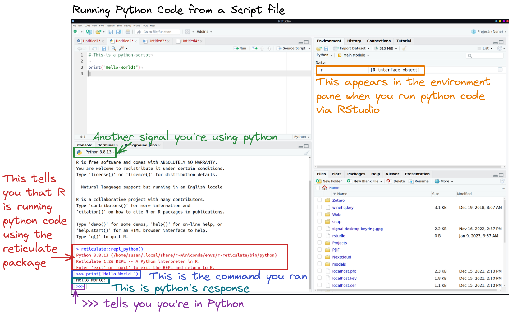
>>>, and the results will appear immediately below. A >>> waits for a new command - to get back to R, you will need to type exit (as instructed by the red text). In the environment pane, you cna see another indicator that you’re viewing the python environment, with an object named ‘r’ that will allow you to move data back and forth between the two languages if you want to do so.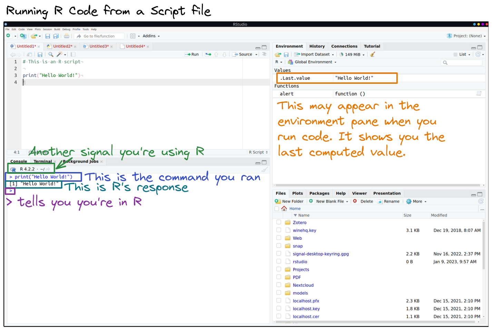
>, and the results will appear immediately below, with boxed numbers in front of each sequential line. A > waits for a new command . In the environment pane, you may see a new value pop up named .Last.value - this is part of user settings and you can stop it from appearing if you want to.4.5 The Top Right Pane
This pane contains a set of tabs that change based on your project and what you have enabled. If you’re using git with an Rstudio project, then this tab will show your git repository. If you’re working with an Rstudio project that has multiple files, such as a book or a website, then the pane will also have a Build tab that will build all of your project files.
For now, though, let’s assume you’re not in an Rstudio project and you just want to know what the heck an Environment pane (or any of the other tabs in here by default) is. We’re going to focus on two of the tabs that are the most relevant to you right now: Environment, and History.
4.5.1 Environment tab
The Environment tab shows you any objects which are defined in memory in whatever language you’re currently using (as long as it’s R or python). You’ll see headers like “Data”, “Values”, and “Functions” within this table, and two columns - the name of the thing, and the value of the thing (if it’s a complicated object, you’ll see what type of object it is and possibly how long it is).
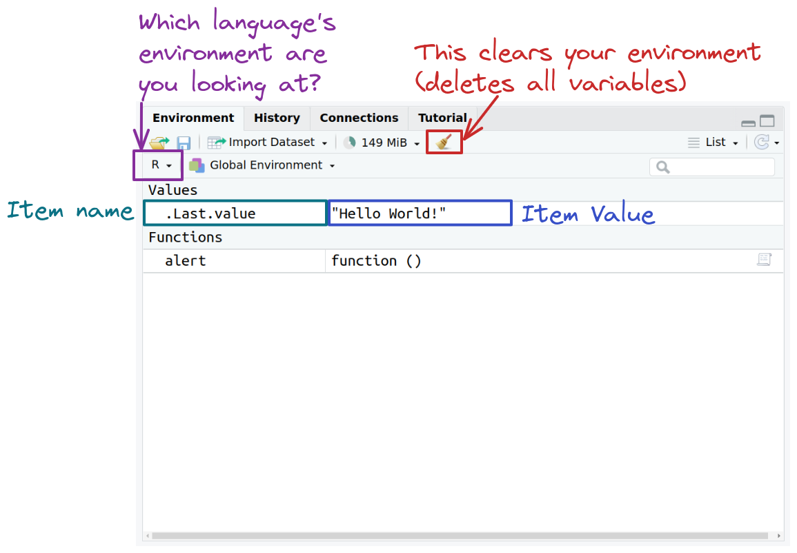
If you’re working in both R and python, you can toggle which language’s environment you’re looking at using the language drop down button on the far left side.
4.5.2 History tab
Another useful tab in this pane is the History tab, which shows you a running list of every command you’ve ever run. While I strongly encourage you to write your code in a text file in the editor pane, sometimes you deleted a line of code accidentally and want to get it back… and the history tab has you covered (unless you’ve cleared the history out).
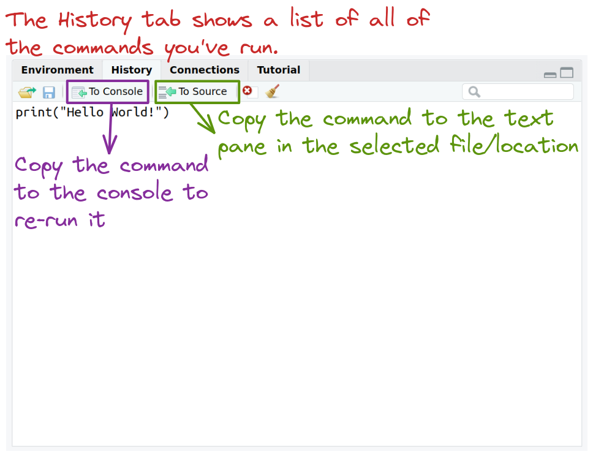
4.6 The Bottom Right Pane
This pane also contains a mishmash of tabs that have various uses. Here, we’ll focus on 3: Files, Packages, and Help. But first, to quickly summarize the remaining tabs, the Plots tab shows any plots you’ve generated (which we haven’t done yet), and the Viewer/Presentation tabs show you compiled documents (markdown), interactive graphics, and presentations.
4.6.1 Files tab
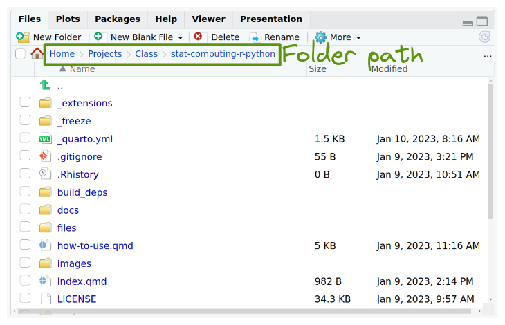
~/Projects/Class/stat-computing-r-python/.4.6.2 Packages tab
The packages tab isn’t quite relevant yet, but it will be soon. R and python both work off of packages - extensions to the default language that make it easier to accomplish certain tasks, like reading data from Excel files or drawing pretty charts. This tab shows all of the R packages you have installed on your machine, and which ones are currently loaded.
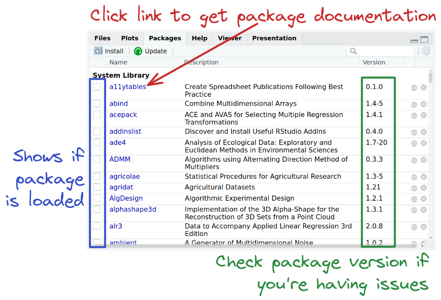
Unfortunately, the packages tab doesn’t cover python packages yet.
4.6.3 Help tab
The help tab is a wonderful way to get help with how to use an R or python function.
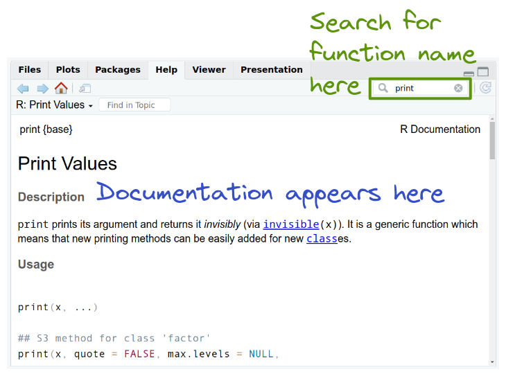
By default, you can search for an R function name in the search window, and documentation for matching functions will appear in the main part of the pane. To get help with python functions, you need to (in the python console) use ?<function name, so I would type in at the >>> prompt ?print to get the equivalent python help file.